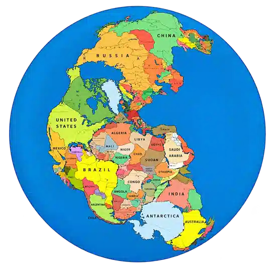
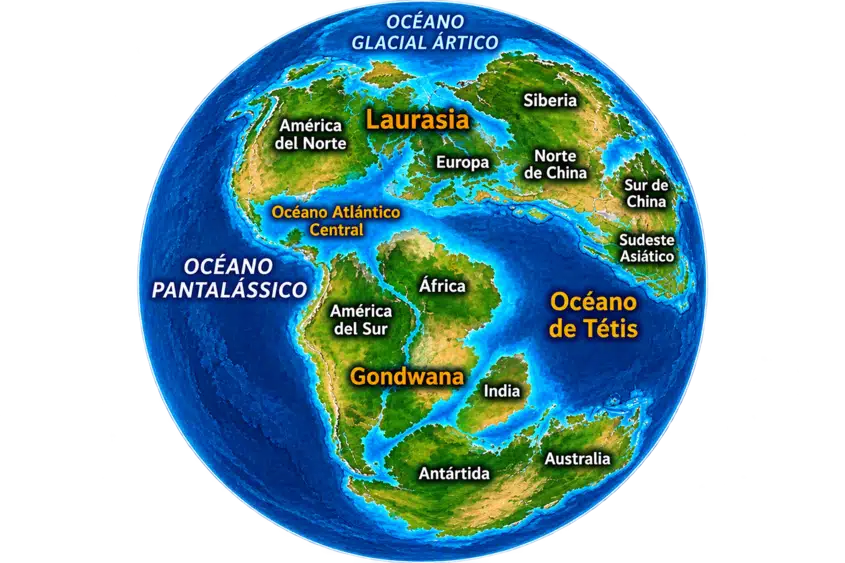
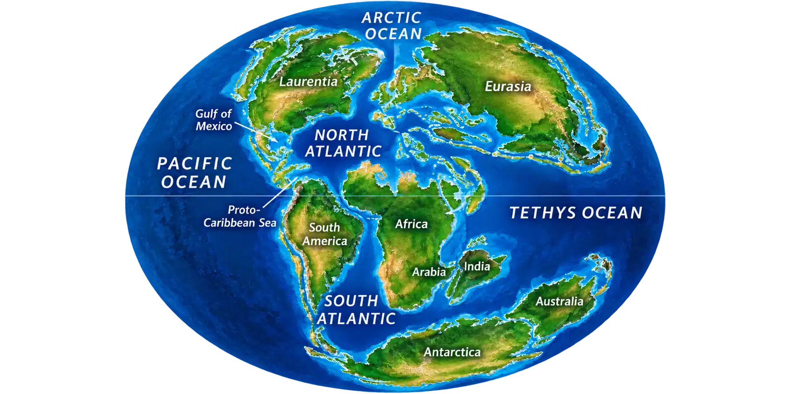

Mundo prehistórico
¿Cómo era el mundo en la era de los dinosaurios?
Durante la era de los dinosaurios, el mundo era muy diferente al que conocemos hoy en día. Los continentes estaban en diferentes posiciones y el clima era más cálido y húmedo. Los océanos eran más extensos y había grandes áreas de tierra emergida que ahora están sumergidas bajo el agua.
Los dinosaurios vivieron en diferentes períodos de tiempo, desde el Triásico hasta el Cretácico, y durante este tiempo, la vida en la Tierra evolucionó de manera significativa. Los dinosaurios eran los animales dominantes en la Tierra, y coexistían con otros reptiles, aves primitivas y mamíferos pequeños.
El mundo de los dinosaurios estaba lleno de vida y diversidad, y aunque muchos de estos animales se extinguieron hace millones de años, su legado sigue vivo en la actualidad a través de los fósiles y la investigación científica.
Mapas de los continentes durante la era de los dinosaurios


